https://www.gpspower.net/gps-news/330038-evolution-car-navigation-technology-pictures.html
http://www.dieselpunks.org/profiles/blogs/iter-avto-the-worlds-first
http://www.messynessychic.com/2014/06/09/the-forgotten-firsts-10-vintage-versions-of-modern-technology/
 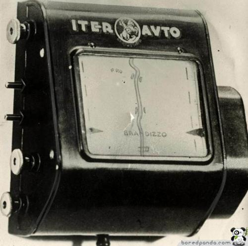
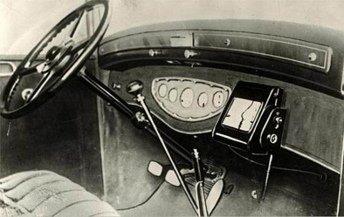
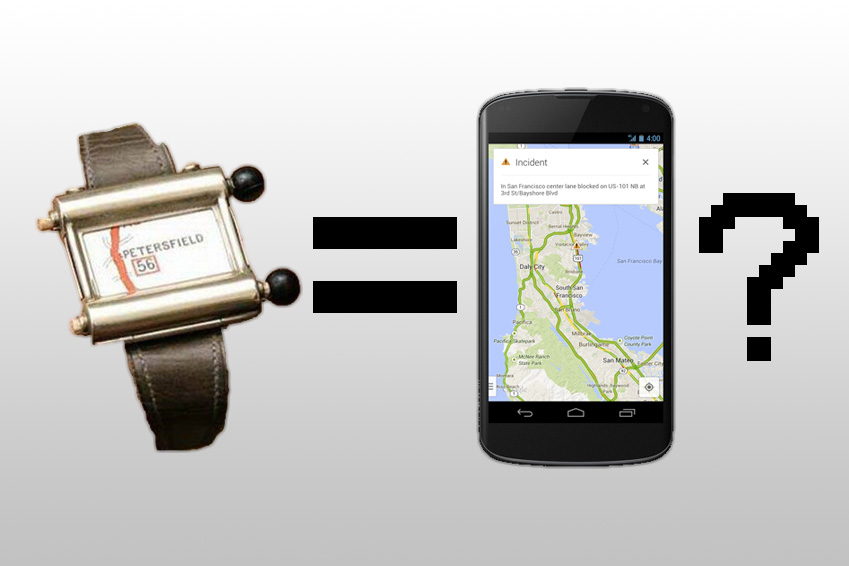
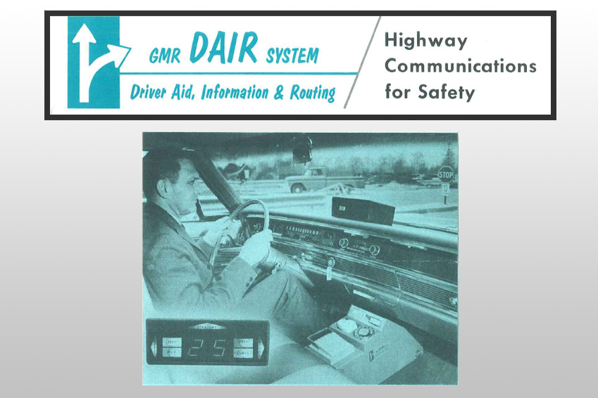
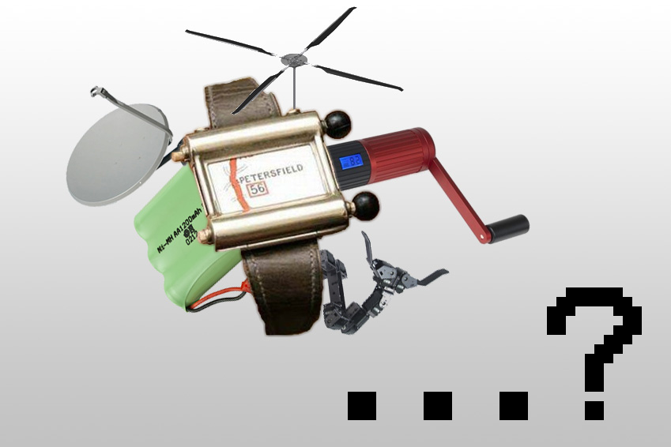
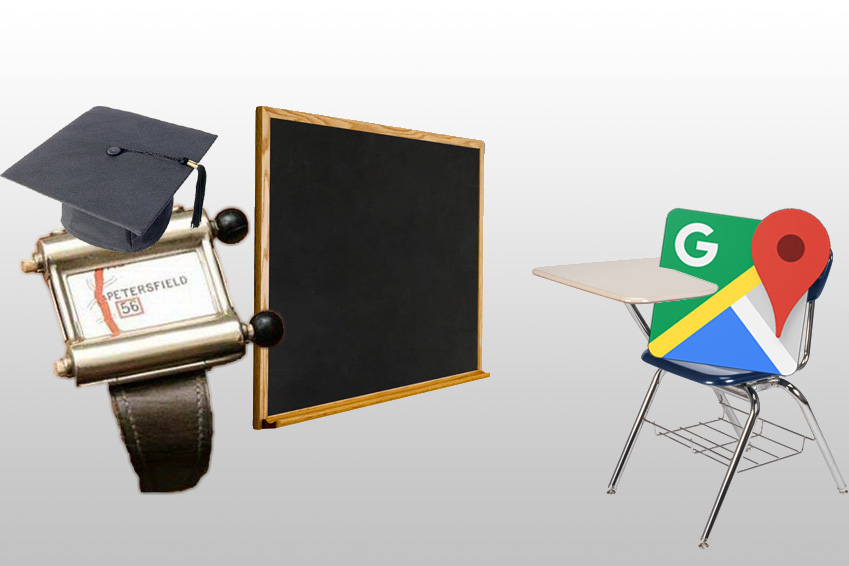
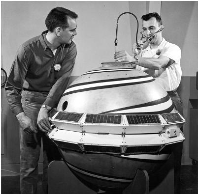
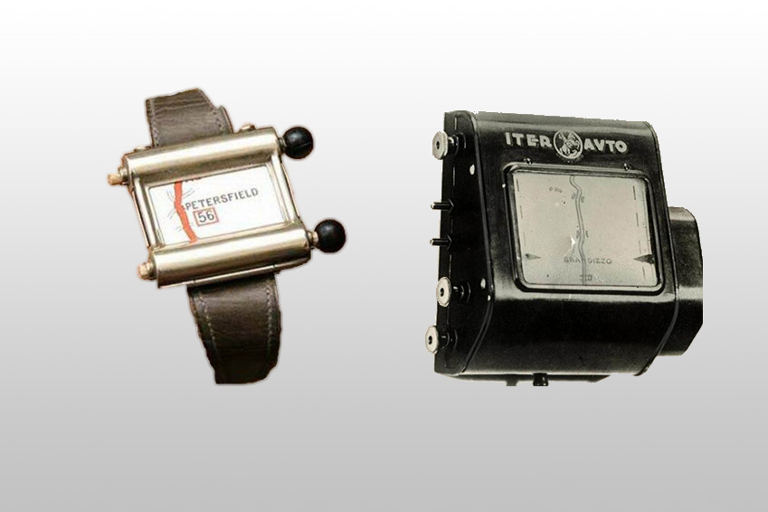
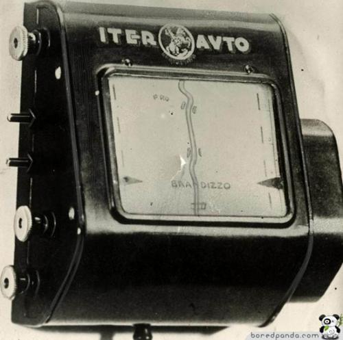
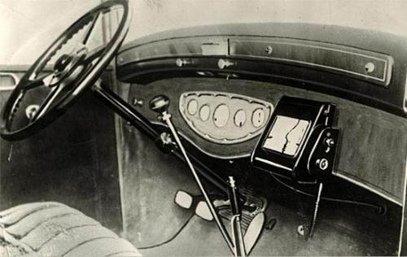
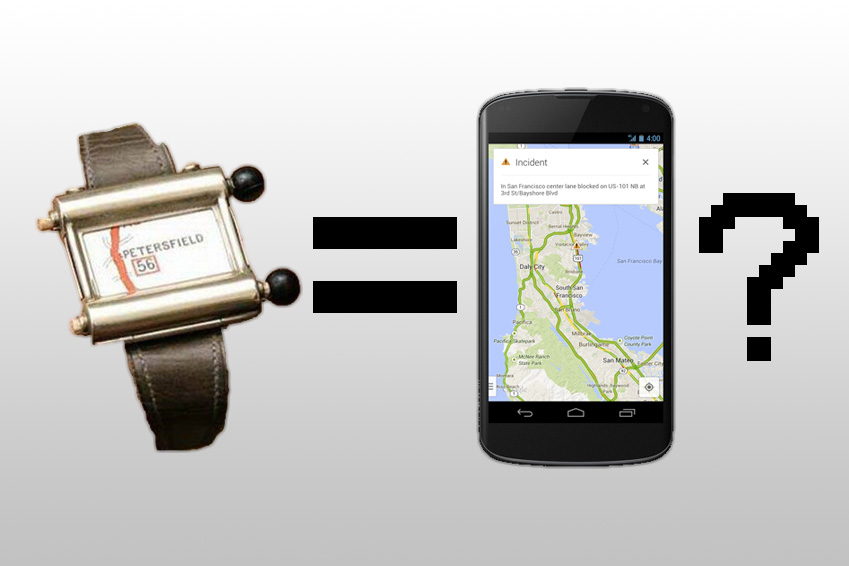
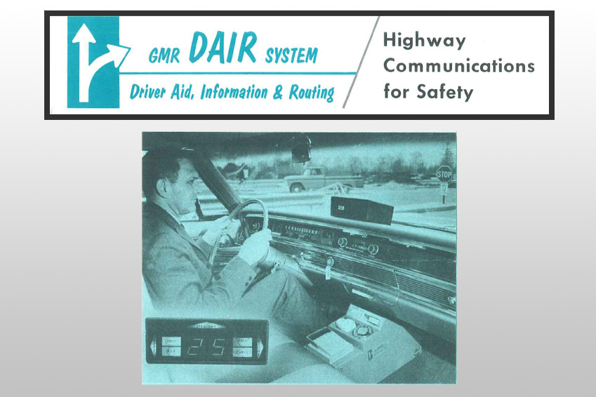
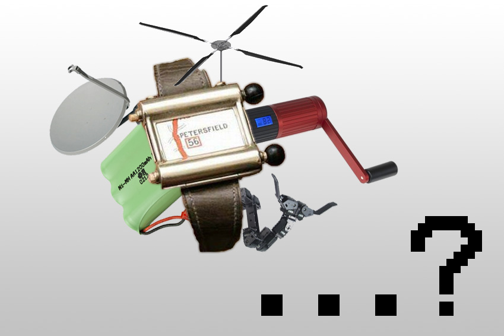
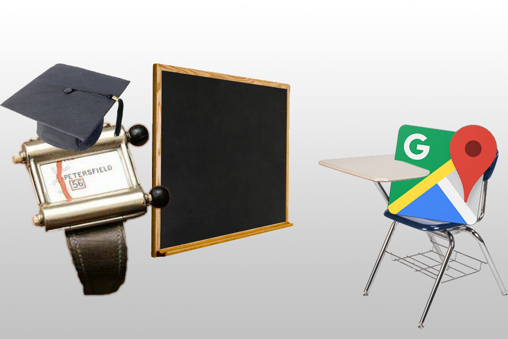
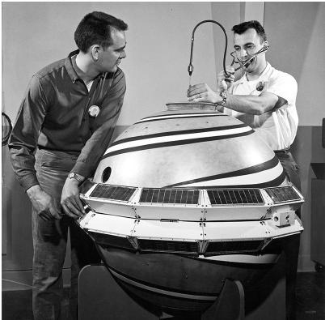
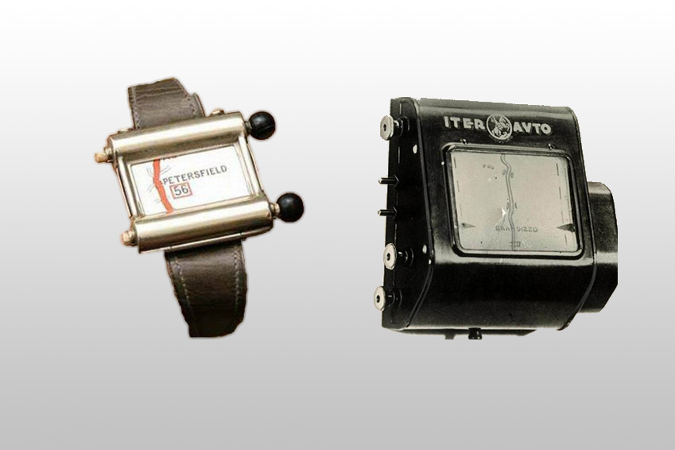